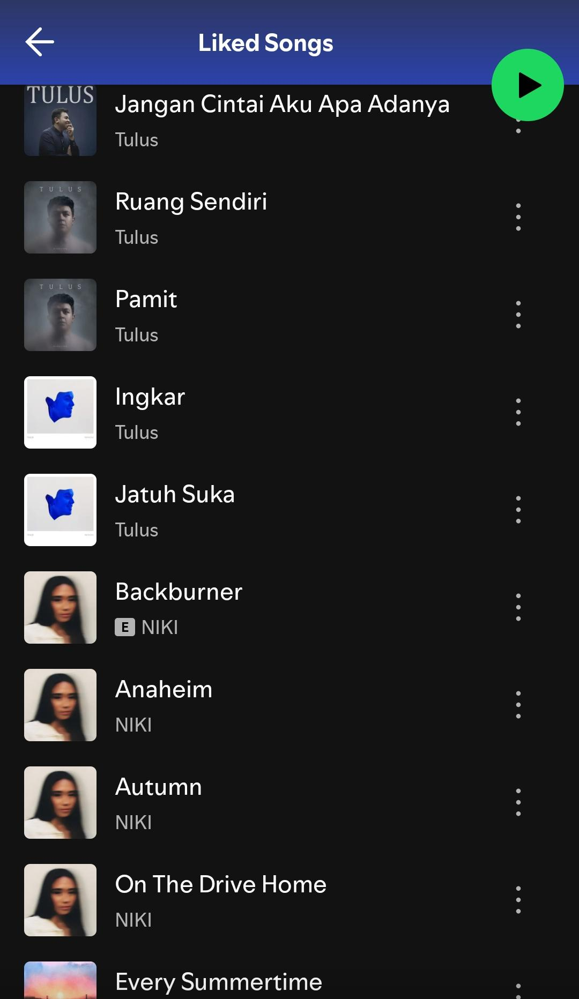
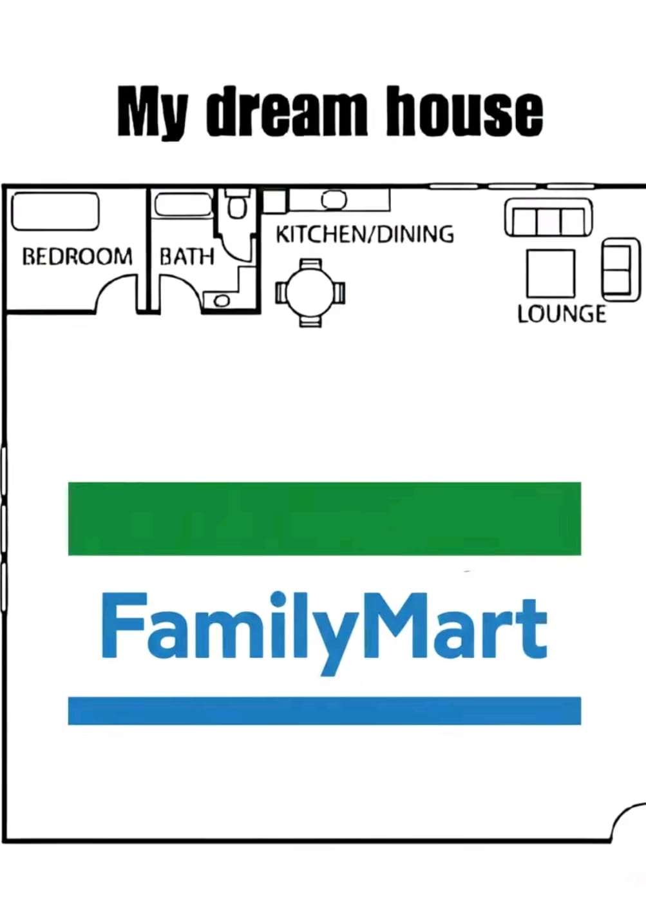

About Me
Hi, saya adalah murid SMAN 4 Tangsel. Saat ini sedang belajar HTML di Petani Kode.
Saya memang masih baru dalam web development, karena itu saya tidak akan pernah berhenti belajar.
Saya ingin menguasai bahasa HTML, CSS, dan Javascript.
Selain belajar html saya juga punya beberapa hobi. Berikut adalah beberapa hal yang membuat saya happy:

dengerin lagu: Saya suka dengerin lagu lagunya abang Tulus❤🧡💛💚💙💜 sama Niki juga💞.

Ke Family Mart: saya suka kesana bareng temen, ngobrol, makan, ngopi, sampe diusir😪😭.